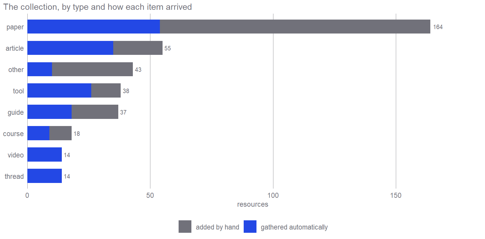
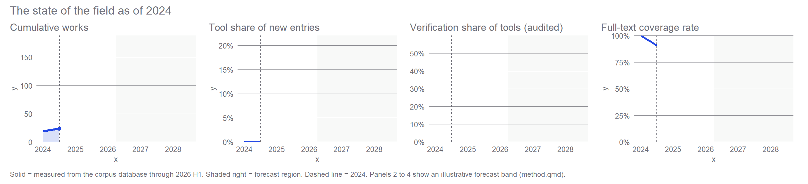
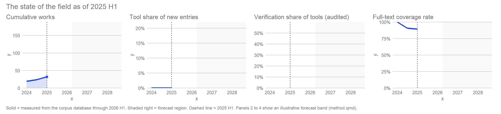
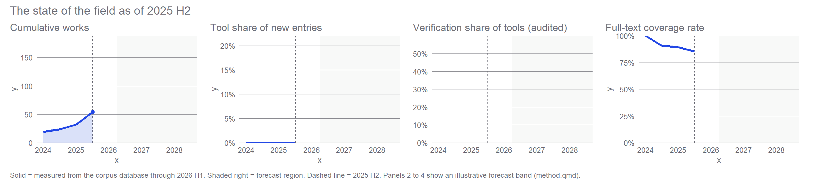

How Economics Absorbed AI
Cheap Intelligence, In Demand of Trust
Scenario
This is a scenario. The first half is a history of one research field, economics meeting AI, told from a collection of 385 resources, 287 of them with their full text attached. The second half forecasts the next two to five years and ends in a fork with two endings. The method is simple and stated up front. Every number about the past is recomputed from a database, and every claim about the future carries a probability.
The collection behind this page did not come from one search. A small automated pipeline watches the places where this field actually publishes, journal sites and working-paper series, but also newsletters, personal websites, X threads, GitHub repositories, course pages, and recorded talks. It pulls in what is new, fetches the full text wherever it can be legitimately obtained, and files everything in one database, alongside guides and tools added by hand, one judgment call at a time. The result spans everything from a Quarterly Journal of Economics article to a tool’s README to a piece of federal legislation. It is not the field. It is one curator’s map of the field, and like any map it shows the mapmaker’s routes as well as the territory. Papers dominate, but a striking share of the field’s working knowledge arrived in formats journals do not carry:
The one-sentence thesis, in the wording it was first written in, is that intelligence just became cheap and trust did not, so the new scarce factor is verified judgment. Nearly every document below is a variation on that sentence. The field spent two years learning what it means. When a judgment task, classifying, screening, advising, drafting, refereeing, becomes almost free, it turns out its old price was quietly paying for quality control. Once the task costs nothing, the value, and the risk, move to whoever still checks the work.
How to read this
Every claim about the past is sourced. In the margin beside each section are the people behind that section’s evidence, each work linked to where it lives (for the informal guides, that is usually the author’s own site), and the most important works are named and linked directly in the text. Claims about the future are numbered from P1, 13 in all, each dated, measurable, and carrying a probability. A metrics strip repeats at every time step so you can watch four numbers move: how much the field has produced, how much of the new work is executable tooling, how much of that tooling exists to check other machines, and how much of the record can actually be read in full. The strip is measured through the first half of 2026. After that it shades into a forecast band, and you watch the forecast leave the record.
Part 1 · The retrospective
2024, the productivity ledger opens
Before the field had a name it had a spine. A small set of living documents carried the method, chief among them Anton Korinek’s Generative AI for Economic Research, published in the Journal of Economic Literature and then kept alive on its own site, updated on a cycle faster than journals move because the tooling it described would not sit still. Alongside it sat the first attempts to put AI inside the growth model rather than beside it, Daron Acemoglu’s The Simple Macroeconomics of AI, and the first serious measurement of what the tools did to output.
That measurement was mixed from the start, and it stayed mixed, which is the tell. At the micro level the gains looked real. Erik Brynjolfsson, Danielle Li, and Lindsey Raymond put an AI assistant into a customer-support center and found, in Generative AI at Work in the Quarterly Journal of Economics, a real average productivity gain, concentrated among the least experienced workers. At the level of the firm the same gains kept failing to appear. Representative surveys of executives found most firms adopting AI while a majority reported no measurable effect on employment or productivity, and central-bank monitoring of adoption from the outside told the same story. Economists have seen this movie. In the 1980s Robert Solow quipped that computers were everywhere except the productivity statistics, and the explanations on offer today, short-term losses before long-term gains, revenue that arrives late, firms lacking the skills and processes around the tool, are all versions of one claim: the machine is cheap, and the things that make it pay are not.
What surrounds the tool matters more than the tool. Where firms saw large returns, a person or a process made sure it was actually used well. Where they did not, the same tool sat idle in the workflow. That is the shape of the whole decade in miniature, abundant capability without the integration to match, and it is why the productivity ledger never balanced on the strength of the technology alone.
The guide is a journal article that behaves like software because the knowledge it carries depreciates like software. That is the whole thesis in one artifact. When producing the advice got cheap, keeping it verified got expensive.

Who made what
Kevin Bryan · A User’s Guide to GPT and LLMs for Economic Research
Anton Korinek · Generative AI for Economic Research: Use Cases and Implications for Economists (Journal of Economic Literature)
Anton Korinek · Generative AI for Economic Research
Melissa Dell · Deep Learning for Economists
Daron Acemoglu · The Simple Macroeconomics of AI (NBER WP 32487)
David Autor, Anton Korinek · Impact of Language Models on Cognitive Automation (Brookings)
Erik Brynjolfsson, Danielle Li, Lindsey Raymond · Generative AI at Work (Quarterly Journal of Economics)
Anton Korinek · LLMs Learn to Collaborate and Reason (JEL)
Salomé Baslandze, Zachary Edwards, John Graham, Ty McClure, Brent H. Meyer, Michael Sparks, Sonya R. Waddell, Daniel Weitz · Artificial Intelligence, Productivity, and the Workforce: Evidence from Corporate Executives (NBER WP 34984)
Jeffrey S. Allen · Monitoring AI Adoption in the US Economy (FEDS Notes)
2025 H1, the task arithmetic starts to break
The first generation of exposure indices did something simple. It scored tasks for AI susceptibility and summed them. The next generation showed the sum was wrong in both directions. When tasks depend on each other’s quality, automating some of them raises the value of the human work that remains, so the indices overstate displacement, a point Alex Imas and Soumitra Shukla make plainly. When tasks chain, task-by-task scoring misses the nonlinear gains from automating a whole contiguous sequence. The scores themselves turned out to be unstable under re-measurement, which is its own warning about building policy on them. The counterweight to displacement is genuinely new work, which commands a persistent premium, and the direction of that work is a policy choice rather than a fact of the technology.
There is a policy limit sitting under all of this. If AI is steered toward augmenting workers it raises the value of human tasks. If it is steered toward replacing them, the gains concentrate and the displaced have no landing place. Daron Acemoglu, David Autor, and Simon Johnson call the first path building pro-worker AI; Pascual Restrepo’s bleakly titled We Won’t Be Missed marks where it ends, because steering the direction of innovation only works up to the point where labor’s economic value has fallen far enough, after which the instrument has to be redistribution rather than direction. The pro-worker-versus-replacement question is therefore not a forecast about the machine. It is a choice about which machine gets built and rewarded, which is the same structure the forecast half of this document turns on.
This is also when the field began, quietly, to write about itself. Kevin Bryan’s essay on AI-assisted academic writing treated the researcher’s own keyboard as the object of study. The record is thin here, and most of the papers that pinned down these tensions, the instability of the exposure scores, the shape of the displacement, are dated to 2026, so read them below as later confirmations of a shift that was visible in 2025 and measured a year after.
Whether AI displaces or augments is not read off the model. It is decided by which tasks we let it do and which we insist on checking. Cheap intelligence widens the menu. Scarce trust is what picks from it.

Who made what
Kevin A. Bryan · AI-Assisted Academic Writing in Quantitative Social Science
What Makes New Work Different from More Work?
Michelle Yin, Hoa Vu, Claudia Persico · How (Un)stable Are LLM Occupational Exposure Scores? (NBER WP 35110)
Alex Imas, Soumitra Shukla · How Will AI-Driven Automation Actually Affect Jobs?
Pascual Restrepo · We Won’t Be Missed: Work and Growth in the AGI World (NBER WP 34423)
Daron Acemoglu, David Autor, Simon Johnson · Building Pro-Worker Artificial Intelligence (NBER WP 34854)
Susan Athey, Fiona Scott Morton · Artificial Intelligence, Competition, and Welfare (NBER WP 34444)
Kevin Bryan · AI and Economics Research Roundup (Afinetheorem)
2025 H2, the brokers arrive, and knowledge starts to compile
The methods did not move through journals. They moved through a handful of people writing in the open. Pedro Sant’Anna published his own Claude Code setup as a working document. Scott Cunningham worked through agentic research workflows in public, on Substack. Claes Bäckman turned his own learning curve into guides and tips pages for PhD students. Aniket Panjwani taught economists to run AI agents. The shelf kept filling from here into 2026: Chris Blattman’s AI for professionals who don’t code, Bäckman’s tips grown into a full Claude Code guide for academic economists, Jared Black’s end-to-end research flow, and Erkmen Aslim and Emily Beam’s Thinking with Agents, a whole bootcamp for teaching and research. A small broker class, bilingual between software practice and economics, produced most of the field’s usable method knowledge, six to eighteen months behind the software world it was translating. The returns to AI in research scale with the share of researchers who actually hold the expertise, so a reading list is not a convenience. It is that share being raised one bookmark at a time.
What the brokers were circulating was a new kind of object. Prose advice was turning into executable knowledge, skills, templates, instruction files, scaffolding that a machine reads and runs. That is the form that diffuses at software speed rather than citation speed. The first dedicated venues appeared to match, a workshop on the economics of transformative AI, and the earliest field courses. The record starts to grow in earnest here, and the strip shows the inflection.
Underneath the scattered guides a shared methodology was converging, and it distills into four rules. Triage: let the machine produce, never let it be the check. Hand over what is easy to check, editing, first-pass literature searches; keep what is hard to check, proofs and identification arguments. The repo as laboratory: everything lives in version control, the machine works on its own branch, and the researcher reviews the actual changes, not the machine’s summary of them. A short instruction file states the house rules and the forbidden moves, and the real test of any analysis is that it reruns end to end, because an analysis that cannot rerun is not accepted from a machine. LLMs as measurement instruments: before trusting the machine at scale, have humans label a sample, and report how well the machine agrees with people compared with how well people agree with each other. Save the prompt, the model version, and the raw outputs, because companies retire models, and reproducing the result later means the archive plus the procedure. Writing and self-audit: no citation enters a manuscript unchecked against its source, the machine edits but the claims come from the researcher, and, the load-bearing habit, redo a machine result by hand from time to time, because letting the machine do all the practice erodes the judgment needed to supervise it.
None of the four is hypothetical. Paul Goldsmith-Pinkham builds a figure from an empty folder in public, diffs and all, and shows what an instruction file should record. The measurement rule is formalized by Jens Ludwig, Sendhil Mullainathan, and Ashesh Rambachan in an applied econometric framework. The citation rule already ships as a machine-loadable skill. And, in the interest of disclosure, the author of this page ran a wiiw seminar walking a working agentic pipeline end to end, the same kind of pipeline this document is built on.
That last rule is the whole thesis at the scale of one desk. Producing a result has become cheap; trusting one has not. The choice the profession faces in the forecast below, reward the checking or lose it, shows up first as a personal habit.
An instruction file is tacit lab knowledge, written down for a machine because the machine will not work without it. Cheap execution bought the profession the documentation a decade of open-science exhortation could not.

Who made what
Pedro H. C. Sant’Anna · My Claude Code Setup
Scott Cunningham · Claude Code for Quantitative Social Science (Substack)
Claes Backman · Tips for PhD Students
Aniket Panjwani · AI Agents for Economics Research
Chris Blattman · AI for Professionals Who Don’t Code
Claes Bäckman · Claude Code in VS Code — For Academic Economists: A Practical Guide
Jared Black · An AI-Assisted Research Flow
Erkmen G. Aslim, Emily Beam · Thinking with Agents: AI Tools for Teaching and Research (UVM Economics Bootcamp)
Paul Goldsmith-Pinkham · From an Empty Folder to a Figure
Paul Goldsmith-Pinkham · Getting Started with Claude Code
Claude Skill: Citation Checker
Luka Šikić · AI in Economics Research: From Frontier Ideas to a Working Agentic Pipeline (wiiw seminar)
Anton Korinek · Economics of Transformative AI Workshop (NBER, 2025)
Benjamin Golub · Modern AI for Economics Research (Markus Academy)
Jens Ludwig, Sendhil Mullainathan, Ashesh Rambachan · Large Language Models: An Applied Econometric Framework (NBER WP 33344)
Yiqing Xu, Leo Yang · Scaling Reproducibility: An AI-Assisted Workflow for Large-Scale Replication and Reanalysis (arXiv)
2026 H1, the record arrives all at once (the field did not)
Of every dated work in the collection, 65.2% is dated to this one half-year, and the strip’s cumulative panel goes near-vertical. Read plainly, that looks like a field exploding into being in 2026. It is not, or not only. Part of that spike is real, and part is an artifact of when the collection was assembled: most of it was gathered in mid-2026, and a collector always finds the recent past first. The collection even carries its own correction, a weekly digest of new AI-economics working papers archived back to June 2023, at scale, so the field was producing years before this spike. The honest reading is that the record arrived all at once. The field had been arriving for a while. What is real in this section is the shape of what the record contains, and it carries the most evidence of any period, so read the numbers and not the verticality.
The literature, in four movements. The Q1 2026 papers sort into a story. First, the productivity ledger stays unsettled, micro gains that refuse to aggregate. Second, the task arithmetic breaks down in both directions. Joshua Gans and Avi Goldfarb formalize one half in O-Ring Automation, where output is only as strong as the weakest task, so automating some tasks raises the value of the human work that remains; a companion model of chaining tasks shows the other half, where automating a whole connected sequence pays far more than the sum of its steps. Third, AI enters the papers twice over. As an actor that trades in markets, splits an ultimatum-game pie, in Douglas Araujo and Harald Uhlig’s How Does AI Distribute the Pie?, and gives financial advice that shifts with the counterparty’s perceived gender. And as an instrument that builds a decades-long capital-controls dataset that was impractical by hand, and classifies decades of articles to date a shift from efficiency to equity framing. Fourth, the dark line. Robert Novy-Marx and Mihail Velikov demonstrate that language models can generate complete finance papers from templates, and a model of knowledge collapse shows how better AI can leave society less knowledgeable once it substitutes for effortful learning.
The four movements
Joshua S. Gans, Avi Goldfarb · O-Ring Automation
Chaining Tasks, Redefining Work
Alexander Erlei, Lukas Meub · LLM-Agent Interactions on Markets with Information Asymmetries
Douglas K.G. Araujo, Harald Uhlig · How Does AI Distribute the Pie? Large Language Models and the Ultimatum Game (NBER WP 34919)
Richard Foltyn, Jonna Olsson · The Worth of a ‘Wo’: Gender Bias in Financial Advice from LLMs
Expanding the Landscape of Cross-Border Flow Restrictions
Measuring Efficiency and Equity Framing
Robert Novy-Marx, Mihail Velikov · Artificial Intelligence–Powered (Finance) Scholarship (JEL)
Verification became a category of its own, and it is easy to overcount. The same ecosystem generating the flood started building the thing that checks it. Agentic paper reviewers, referee services, and feedback machines add up to a referee factory. How large is it? A quick keyword count over the 38 tools in the collection said two of every three were verifiers. Reading them one by one says otherwise: 11 of the 38 (28.9%) actually check another machine’s output, closer to one in three. The keyword count was fooled by literature-search assistants and even by academic-humanizer, a tool built to strip the very tells that verifiers look for. The correction is the thesis in one move, an unchecked filter is just more cheap intelligence, and the checked figure, one referee tool in three, is still the largest single thing the field is building. The hand labels are on the Method page, and prediction P1 resolves on them.
Reproducibility arrived through the back door. Agents work well only in projects that are versioned, tested, documented, and machine-readable, so adopting them smuggles software engineering into economics whether or not the researcher cares about open science. The practice that a decade of exhortation could not make normal, version control, unit tests, a written lab manual, is now a precondition for the tool to behave.
The field is studying itself, with an overlapping cast. Aniket Panjwani’s newsletter watches cheap intelligence hit the economy while his library installs it into the profession’s own workflow. Joshua Gans authors both the formal model of jagged intelligence and the essay on vibe researching. Paul Goldsmith-Pinkham co-authors the radiology complementarity paper and writes Research in the Time of AI. The AEA lectures that both pages point to are given by the same names. Economics is simultaneously the observer and the treated unit, and the overlap makes the reflexivity a documented fact rather than a rhetorical flourish.
Verification and reflexivity
Ingar Haaland · Reviewer: Multi-Agent Referee for Economics Papers
Stanford CRFM · PaperReview.ai - Stanford Agentic Paper Reviewer
Claes Bäckman · Feedback Machines: AI for Research Paper Review
Paul Goldsmith-Pinkham · Research in the Time of AI
Joshua Gans · Reflections on Vibe Researching (in 2025)
Paul Goldsmith-Pinkham, Chenhao Tan, Alexander K. Zentefis · Human-AI Collaboration in Radiology: The Case of Pulmonary Embolism
A Model of Artificial Jagged Intelligence
Aniket Panjwani · The AI Economist Newsletter
Aniket Panjwani · The AI Economist Library
Scott Cunningham, Kosali Simon · What a Panel of Economists Said About AI in the Production of Research
The vendors are inside the value chain. The labs sit in the discipline at four layers at once. They ship the tools, they run the training, they hold the data, and they author into the literature, as when Anthropic’s own researchers argue that agentic coding raises the returns to expertise. The instrument, the vendor, and the co-author are increasingly one entity.
Access inverted, and the largest document is a statute. The informal layer, threads, guides, tool READMEs, is open and machine-readable. The formal literature sits behind embargoes and paywalls. In this collection, the informal categories reach 86.6% full-text coverage while research papers sit at 58%, held down by the embargoed frontier. And the single heaviest document is not a paper at all. It is a piece of federal legislation, one whale holding 33.4% of all the extracted text, in a sea of minnows.
The timeline compressed. Field courses, dedicated conferences, an NBER Summer Institute session, AEA lectures, and scenario-planning tools built inside institutions all arrived by 2026, faster than a naive diffusion story predicts, because the practice was already circulating as craft knowledge before any of it was codified.
A division of labor set in. Informal outlets, Substacks, threads, tool READMEs, own the how-to knowledge and move it at software speed. Journals still own the finding of record, the result that gets cited, credited, and defended. And between the two sits a growing stream of usage data, adoption surveys, logs, and monitoring reports, that lets the field watch its own uptake in close to real time. The papers measuring AI adoption across firms and across countries are that middle layer made visible.
And the profession started to reprice itself. The upside is that whole data categories open up. Corpus-scale construction is cheap now, agents can build a dataset on a loop or turn a pile of EDGAR filings into a structured database, and validated against a human benchmark, LLMs work as measurement instruments indistinguishable from human coders. The binding constraint moves from collecting data to designing the validation, so a human-benchmarked check is on its way to being as obligatory as a robustness section, already formalized for meta-analysis. The downside is a pincer aimed at the profession itself. One jaw is the paper mill, cheap papers at industrial scale, which is specification search with the labor cost removed. The other is knowledge collapse run reflexively. The grunt work that used to build econometric judgment is exactly what agents now do, so the apprenticeship that produced verifiers thins out at the moment verification becomes scarce. The practical defense is the one the radiology and coding-audit studies keep finding, perceived helpfulness is not audited correctness, so build the independent check into the pipeline through tests, replication, and adversarial review. Underneath all of it, an institutional layer of data-use agreements, compliance frameworks, and compute now decides what research is possible and who can do it. Talent equalizes. Access stratifies.
The repricing
Santiago Afonso, Sebastian Galiani, Ramiro H. Gálvez, Raul A. Sosa · Deep Research on a Loop: Using AI Agents to Construct Economic Datasets (NBER WP 35188)
Paul Goldsmith-Pinkham · From EDGAR Filings to a Structured Database
Nikolai Cook, František Bartoš, Pedro R. D. Bom, Sebastian Gechert, Klára Kantová, Jerome Geyer-Klingeberg, Tomáš Havránek, Zuzana Irsova, Martina Luskova · Guidance for the Use of AI in the Meta-Analysis of Economics Research
Grace Liu, Brian Christian, Tsvetomira Dumbalska, Michiel A. Bakker, Rachit Dubey · AI Assistance Reduces Persistence and Hurts Independent Performance (arXiv)
Thomas Lyttelton, Maxim Massenkoff, Nathan Wilmers · Coding Agents in the Social Sciences (Anthropic Economic Research)
The first market response to abundant machine text is a market for human filters. One tool in three the field built is a filter, audited, not asserted. That is cheap intelligence and scarce trust, measured.

The field arrives
Elliott Ash · Language Models for Economics (AEA 2026, Ash)
Danielle Li · AI and the Labor Market (AEA 2026, Li)
NBER Summer Institute 2026: Digital Economics and Artificial Intelligence
AI Futures Model: Scenario Planning Tool
Gabor Bekes · Doing Data Analysis with AI (Course)
2026 ESIF Economics and AI+ML Meeting (Econometric Society)
Karim Barhoumi, Fabia A. de Carvalho, Michael Gorbanyov, Yosuke Kido, David Koll, Dragana Ostojic, Baoping Shang, Natalia T. Tamirisa, Sally Toms, Era Dabla-Norris, Anh D. M. Nguyen, Yunhui Zhao · Global Economic and Financial Implications of AI: Lessons from a Scenario Planning Exercise (IMF Note)
Zoe Hitzig, Maxim Massenkoff, Eva Lyubich, Shaoyi Zhang, Ryan Heller, Peter McCrory · Agentic coding and persistent returns to expertise (Anthropic)
Jeffrey S. Allen · Monitoring AI Adoption in the US Economy (FEDS Notes)
Alexander Bick, Adam Blandin, David Deming, Nicola Fuchs-Schündeln, Jonas Jessen · Why Does AI Adoption Differ So Much across Countries?
Ivan Yotzov, Jose Maria Barrero, Nicholas Bloom, Philip Bunn, Steven J. Davis, et al. · Firm Data on AI (NBER WP 34836)
Where the evidence argues back
A thesis this clean invites objections, and the strongest ones are sitting in the same collection. Three are worth answering before the forecast, because the evidence supplies both the challenge and the reply.
The bottleneck is taste, not checking. Ning Li’s The Ideation Bottleneck decomposes the quality gap between AI-generated and human research and attributes the large majority of it, on its own numbers roughly 71%, to idea quality, not execution. If the binding constraint is ideation, then verification is not the scarce factor and this whole document is aimed at the wrong problem. The reply concedes ground but holds the line. You cannot make a rule that people have good taste; you can make a rule that work gets checked. So institutions organize around the thing they can enforce. Verified judgment is where the rules bind, even if taste is where the frontier moves.
Trust got cheap too. The pricing here is sharp. Alejandro Lopez-Lira’s ZeroPaper generates a full research paper for about two dollars. Coarse, an AI referee, returns a report for under two dollars. A skeptic reads that symmetry as fatal: if checking is as cheap as producing, verification is not scarce either. The reply is that a cheap check just moves the problem up one level. Who checks the checker? An unchecked AI filter is just more cheap intelligence, so the scarce thing is not the filter but the anchor it rests on: a human-labelled benchmark, a pipeline that reruns, a check somebody stands behind. Alexis Akira Toda ran the controlled test: no model refuted a false economic theory unguided, and human-plus-machine beat both the unaided machine and, in that setting, peer review.
The map is the author’s own workflow. The collection leans toward methods and tooling, which is partly the curator studying his own trade. But it also carries a development-economics thread the thesis never touches, a living evidence bank on AI in development, work on the welfare cost of targeting bias, a tax-benefit microsimulation skill, and that thread widens the claim. Where labour is scarce, full automation can help more, and the scarce-trust story has to share the stage with a scarce-labour one. Disclosed, not hidden, because a map that only covers its author’s desk should say so.
The rivals
Alejandro Lopez-Lira · ZeroPaper: An Autonomous Research System (SSRN)
David van Dijcke · Coarse — AI Paper Reviewer
Alexis Akira Toda · Can AI Refute Economic Theory? Evidence from Beyond the Knowledge Cutoff (arXiv)
Oliver Hanney · AI and development economics: Early evidence and how to keep up
Jesse Lastunen · SOUTHMOD Claude Skill
Part 2 · The forecast
The history above was measured. The forecast below is not, and the difference is deliberate. What follows assumes the tools that already exist keep spreading. Each claim is numbered, dated, and carries a probability in steps of 0.05. Each is written so that a person in 2027 or 2028 can mark it true or false, most of them from public pages and several from this database directly. The full set is mirrored in the Predictions scoreboard, which is the only page that changes after this document is released.
The rest of 2026
The near term is mostly the present, continued. The referee factory keeps filling because the incentive that built it, checking is now the expensive step, has not moved. The first formal institutional responses appear. A journal or data editor states a policy on machine use, and the reporting-standard idea that has been circulating as a proposal gets a name.
p = 0.85P1. By the frozen gold labels, verification and referee tools stay the largest single kind of AI-for-research tool the field builds. The audited share holds at or above 25%.
p = 0.90P2. At least one top-five journal (AER, Econometrica, JPE, QJE, REStud) or the AEA Data Editor carries an explicit written policy on LLM use in submissions.
p = 0.75P3. The named cast (Cunningham, Panjwani, Sant’Anna, Backman, Goldsmith-Pinkham) publishes at least three new guides on their own sites or public repos, verifiable independently of this corpus.
p = 0.55P4. A named, numbered reporting checklist of at least eight items, scoped to LLM-based measurement in economics, is released as a preprint or peer-reviewed article.
2027
By 2027 the pressure reaches the gatekeepers. Submissions climb against refereeing capacity that cannot climb with them, so desk rejection and triage harden, and at least one editor says so in public. The verification norm starts to show up where careers are decided, in what a research-assistant or predoc posting asks for, and the scattered personal toolkits begin to consolidate into maintained suites, because a standard that outlives its author has to.
Every prediction here is a bet on the same mechanism. The cost of producing a result keeps falling, the cost of trusting one does not, and institutions reorganize around the gap.
p = 0.55P5. The AEA Data Editor or at least one top-five journal adopts an LLM or agent system that autonomously executes and checks submission code, applied to standard accepted submissions rather than a one-off pilot.
p = 0.60P6. At least one top-five journal or a named data editor publicly reports a rise in submissions or in desk-rejection rate that it attributes to AI-generated manuscripts.
p = 0.65P7. Research-assistant or predoc postings from at least three top-20 departments or named labs carry explicit reproducibility, replication, verification, or audit language.
p = 0.55P8. At least two multi-author validation suites exist for economics LLM measurement, each with two or more credited authors, a commit within the trailing 12 months, and rOpenSci review or a place on JOSS or CRAN.
p = 0.55P9. Leading agent-coding capabilities ship as defaults in mainstream developer tools, so the share of newly released AI-for-research tools that are standalone coding assistants falls relative to 2026.
2028
The two-to-five-year horizon is where the working papers embargoed today come out of embargo on their own, coverage of the record recovers, and the standards question is settled one way or the other, either a reporting standard is being cited in real methods sections, or it is not. Whether that standard exists, and whether anyone is required to follow it, is the thesis playing out in real time: the field either puts a price on verified judgment, or leaves it unpriced.
p = 0.70P10. At least half of the NBER working papers embargoed at v1.0 have a findable open mirror by the end of 2028, discoverable by the stated resolution procedure, whether or not this corpus has re-fetched them.
p = 0.50P11. The reporting standard defined in P4 is cited in the methods section of at least one peer-reviewed economics article.
p = 0.45P12. A public repository of human-validated gold-labelled datasets for recurring economics text-classification tasks, other than this site’s own tool-labels set, exists and has at least one citation in a peer-reviewed economics article.
p = 0.50P13. Audit-style pedagogy adopted explicitly as an AI-integrity measure appears in graduate economics syllabi at three distinct institutions, whether as planted-error assignments, AI-output audits, or oral examination newly introduced for that purpose.
The ground gets soft here
Everything to 2028 mostly assumes tools that already exist keep spreading, and the error bars are narrow enough to grade. Everything past 2028 depends on a choice by institutions, not on what the models can do, and the error bars widen accordingly. The models will keep improving. That is not the uncertain part. The uncertain part is whether the field’s gatekeepers decide to reward verification before the flood of plausible machine text outruns the humans left to check it. The next section is that choice, and the two endings are the two ways it goes.
The branch, end of 2028
One question decides which ending unfolds, and it is not a question about AI.
Do the field’s gatekeepers, journals, funders, and data editors, make machine verification mandatory and rewarded, or not?
Both endings start from the same facts, printed word-for-word at the top of each, and differ only on the answer to that one question. Having called the question decisive, it would be a dodge not to bet on it, so here is the bet, with the wide error bars the box above warns about. By 2030, Ending A, machine verification made mandatory and rewarded at a top-five journal or by the AEA Data Editor, gets probability 0.35. Ending B, machine-written submissions outrunning the referees with no working check in place, gets 0.30. The remaining 0.35 goes to the middle path: journals move slowly while private services sell verification in the meantime, something Ending B already hints at. So the single most likely 2030 is not either clean ending but a mix of the two, and the endings are written as the pure cases because the mix is easiest to understand as a blend of them. Pick one to read. Expect some of both.
Ending A · The audit
Verification infrastructure catches up the way preregistration did. Agent-checked replication becomes a submission gate, the published literature grows more reliable than it was in 2020, and the unit of contribution drifts from the paper toward the dataset and the living document.
Ending B · The flood
Plausible machine-written papers outrun refereeing capacity. Trust retreats to reputation and network whitelists, insiders win, and the apprenticeship that used to produce verifiers erodes exactly when verification became the scarce input.
Both endings, and every figure above, are recomputed from the underlying database. The retrospective charts extend themselves as the collection grows. The forecast text is frozen at release and graded later. See the Method page for what this document can and cannot verify.